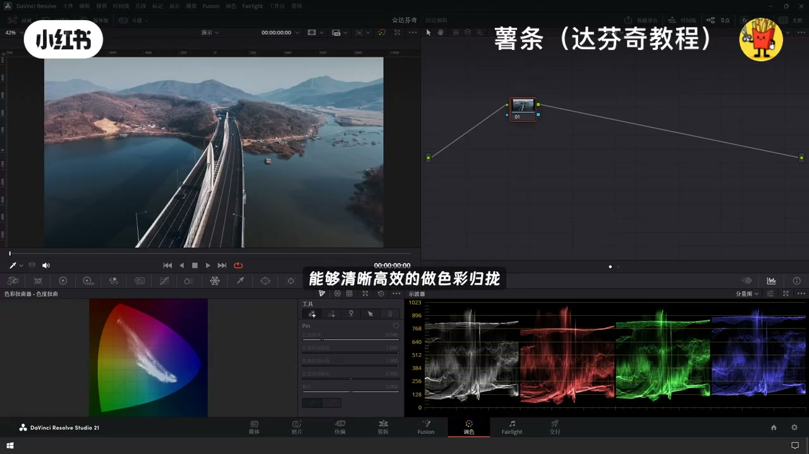
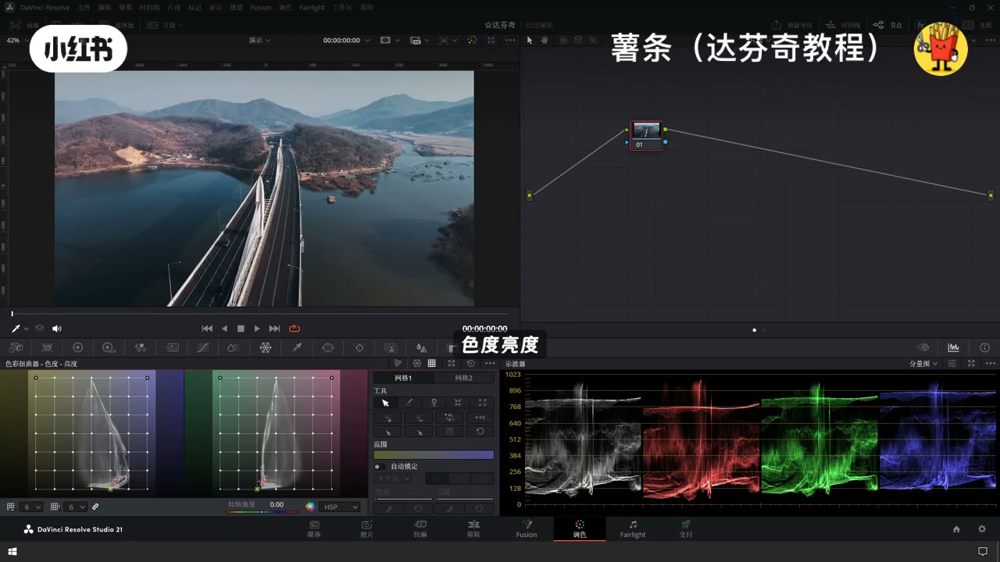
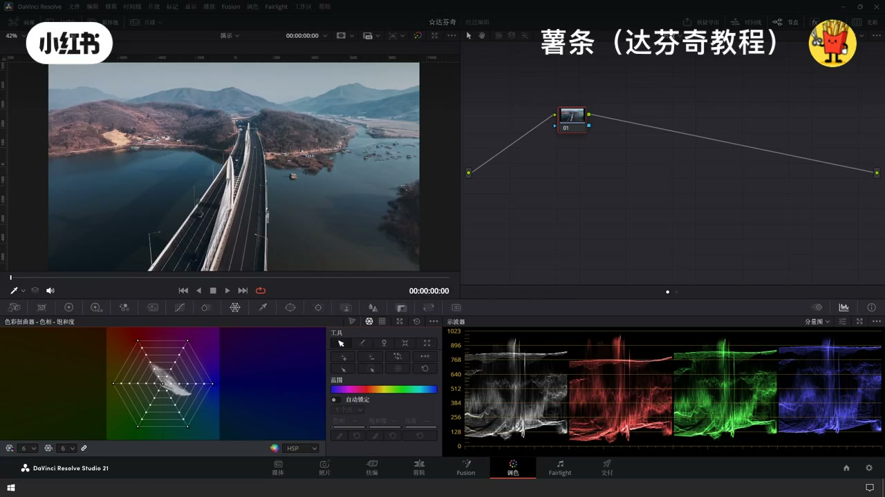
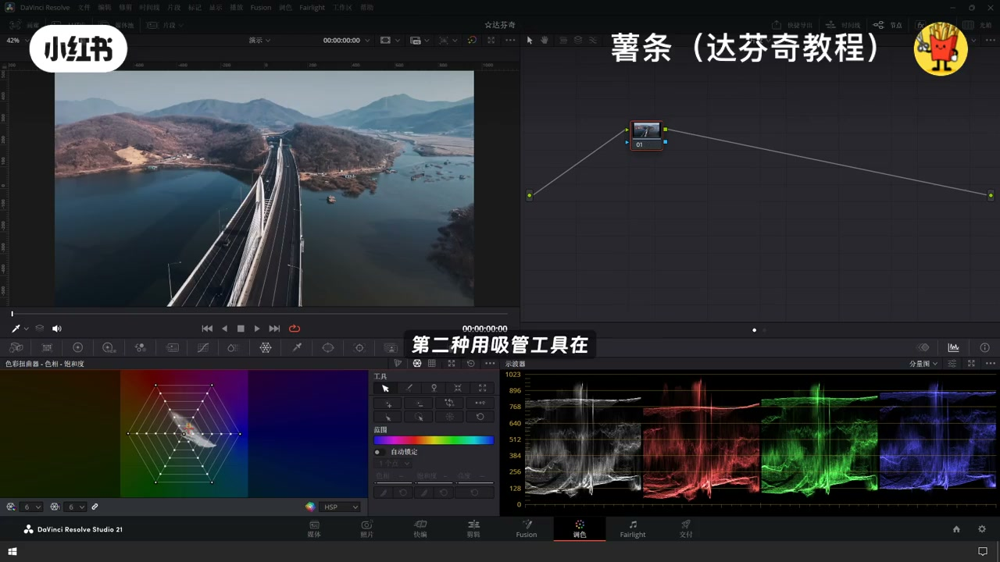
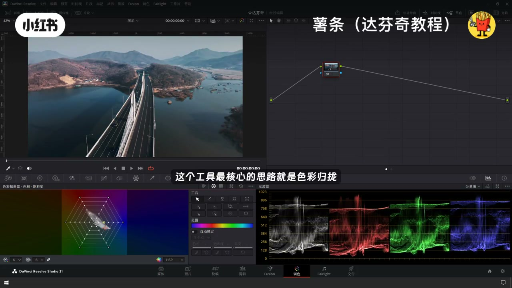
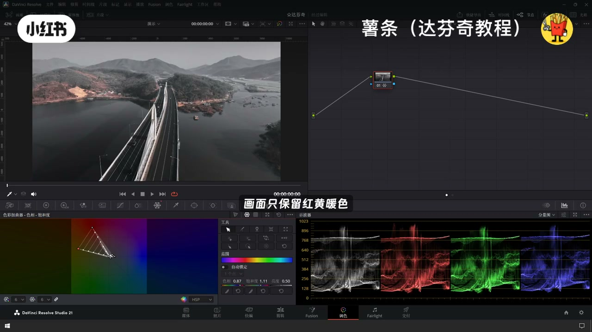
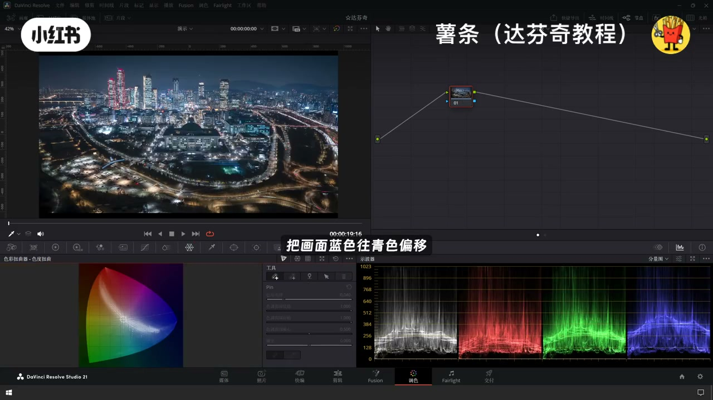
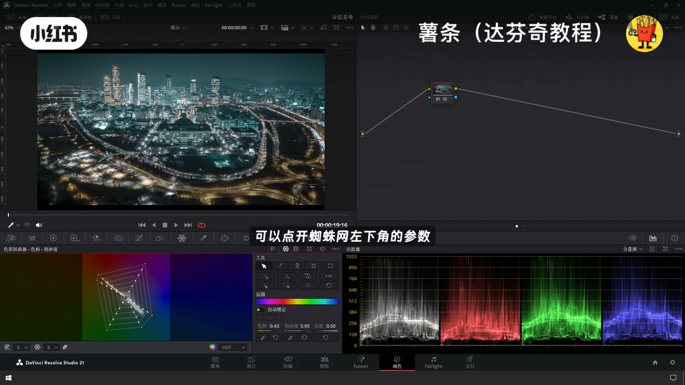

内容要点
「色彩扭曲器才是风格调色神器✨达芬奇蜘蛛网」教程要点：色彩扭曲器是达芬奇利超好用的二级调色工具 → 能够清晰高效的做色彩归笼 → 这期完整教学带你吃透色彩扭曲器 → 它的核心能力是重新映射画面色彩…
知识结构
色彩扭曲器是达芬奇利超好用的二级调色工具
操作方式也很简单
控制点越靠近中心饱和度越低
- 色彩扭曲器是达芬奇利超好用的二级调色工具
- 能够清晰高效的做色彩归笼
- 这期完整教学带你吃透色彩扭曲器
- 它的核心能力是重新映射画面色彩
- 一共有三种调节模式
色彩扭曲器是达芬奇利超好用的二级调色工具
00:00–00:37色彩扭曲器是达芬奇利超好用的二级调色工具
色彩扭曲器是达芬奇利超好用的二级调色工具；能够清晰高效的做色彩归笼；这期完整教学带你吃透色彩扭曲器；它的核心能力是重新映射画面色彩；一共有三种调节模式；色度扭曲,色相饱和度,色度亮度；面板左侧是雷达样式的色相环；右侧是参数控制栏；还能搭配视波器实时观察变化；整套内容我会分成三节来讲；今天先讲使用率最高的色相饱和度模式；也就是大家常说的蜘蛛


00:36–01:13操作方式也很简单
操作方式也很简单；第一种直接拖动色相环上的控制点修改色彩；第二种用吸管工具在画面上选择要调整的颜色；面板就会出现把星标记；选中色块后直接拖拽进行调整；这个工具最核心的思路就是色彩归笼；给大家演示两个最常用的风格；第一个黑晶色调；把色相环上红黄以外所有控制点全部往中心拉；压低其余颜色饱和度；画面只保留红黄暖色；原理也很简单


01:11–01:39控制点越靠近中心饱和度越低
控制点越靠近中心饱和度越低；越往外圈饱和度越高；第二种经典的青橙色调；把画面蓝色往青色偏移；把暖色向橙色偏移；冷暖对比；用蜘蛛网工具有一个细节一定要留意；调整时很容易误伤相近的颜色；遇到这种情况；可以点开蜘蛛网左下角的参数；增加控制点的数量；调色就能更加精准




口述/画面要点（36段）
结合 Whisper medium 与画面大字整理；专有名词已校对。
色彩扭曲器是达芬奇利超好用的二级调色工具
能够清晰高效的做色彩归笼
这期完整教学带你吃透色彩扭曲器
它的核心能力是重新映射画面色彩
一共有三种调节模式
色度扭曲,色相饱和度,色度亮度
面板左侧是雷达样式的色相环
右侧是参数控制栏
还能搭配视波器实时观察变化
整套内容我会分成三节来讲
今天先讲使用率最高的色相饱和度模式
也就是大家常说的蜘蛛
操作方式也很简单
第一种直接拖动色相环上的控制点修改色彩
第二种用吸管工具在画面上选择要调整的颜色
面板就会出现把星标记
选中色块后直接拖拽进行调整
这个工具最核心的思路就是色彩归笼
给大家演示两个最常用的风格
第一个黑晶色调
把色相环上红黄以外所有控制点全部往中心拉
压低其余颜色饱和度
画面只保留红黄暖色
原理也很简单
控制点越靠近中心饱和度越低
越往外圈饱和度越高
第二种经典的青橙色调
把画面蓝色往青色偏移
把暖色向橙色偏移
冷暖对比
用蜘蛛网工具有一个细节一定要留意
调整时很容易误伤相近的颜色
遇到这种情况
可以点开蜘蛛网左下角的参数
增加控制点的数量
调色就能更加精准